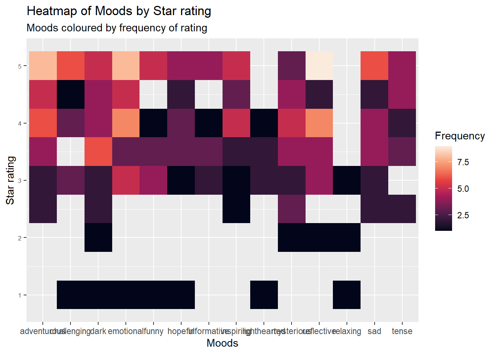

── Conflicts ────────────────────────────────────────── tidyverse_conflicts() ──
✖ dplyr::filter() masks stats::filter()
✖ dplyr::lag() masks stats::lag()
ℹ Use the conflicted package (<http://conflicted.r-lib.org/>) to force all conflicts to become errors
library(dplyr)# Changing cells with multiple moods into multiple rows with one moodnew_sg <- sg_initial %>%separate_rows(Moods, sep =",") %>%mutate(Moods =trimws(Moods))# Removing the two rows of X that simply have NAssg_noXrow<-select(new_sg, -X, -X.1) # Removing rows that have NA in the Moods column, aka all books read before 2024sg_clear <- sg_noXrow %>%na.omit()
Visualizing my data
group by mood and rating, count how many are in mood and rating
# Creating a new dataset with Moods, Star rating, and how many stars I gave moods.sg_count <- sg_clear %>%group_by(Moods,Star.Rating) %>%summarise(count =n())
`summarise()` has grouped output by 'Moods'. You can override using the
`.groups` argument.
# Heatmap illustrating the moods of books I read and how many stars I gave books that had these moods, with colour representing how many books I gave that number of stars.moods_heatmap <- sg_count %>%ggplot(mapping =aes(x = Star.Rating, y = Moods, fill = count)) +geom_tile() +scale_fill_viridis_c(option ="rocket") +#colour packagelabs(title ="Heatmap of Moods by Star rating",subtitle ="Moods coloured by frequency of rating",x ="Rating out of 5 stars", y ="Mood", fill ="Frequency") +theme(axis.text.y =element_text(size =6))moods_heatmap # Calling my heatmap to see what it initially looks like

Making this heatmap interactive
library(plotly) # Calling plotly
Warning: package 'plotly' was built under R version 4.5.2
Attaching package: 'plotly'
The following object is masked from 'package:ggplot2':
last_plot
The following object is masked from 'package:stats':
filter
The following object is masked from 'package:graphics':
layout
ggplotly(moods_heatmap) # Making the graph interactive: now you can hover over tiles to understand how many books were ratied this number of stars.